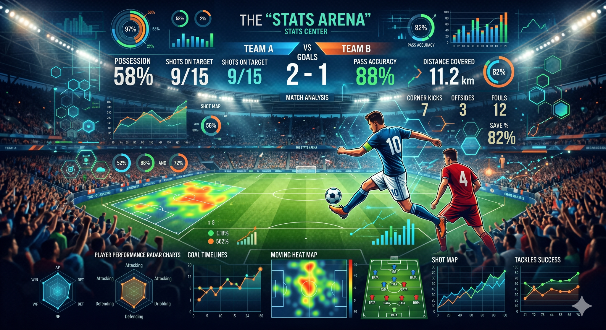

À propos de Soccer Global Ranking
Soccer Global Ranking (SGR) rassemble des informations sur les clubs et les compétitions dans une structure unique afin de faciliter la consultation, la comparaison et le suivi du football mondial.
Une plateforme simple pour consulter et organiser des informations comparatives sur les clubs de football de différents pays et compétitions.
Soccer Global Ranking (SGR) rassemble des informations sur les clubs et les compétitions dans une structure unique afin de faciliter la consultation, la comparaison et le suivi du football mondial.
Le SGR utilise des données sportives et des procédures de calcul pour produire une mesure comparative de la force des équipes et des compétitions. L’objectif est de présenter les informations de manière claire, cohérente et accessible.
Le tableur SGR rassemble les informations sur les clubs, les compétitions et les indicateurs utilisés par le système de classement.

Une interface visuelle pour découvrir le projet SGR.
Fichiers disponibles pour consultation et utilisation dans votre propre environnement.
Pour toute question, suggestion ou soutien au projet, utilisez les canaux ci-dessous.